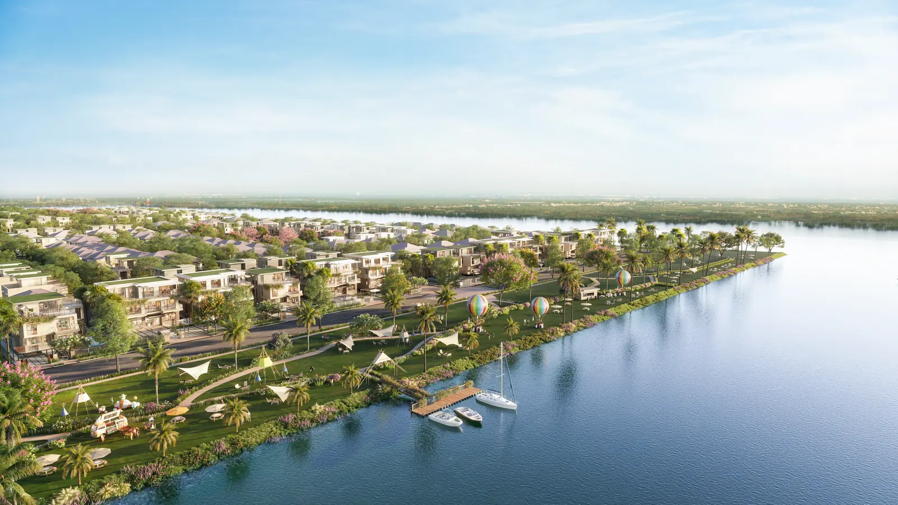
The Aqua Chất riêng bên Vịnh Cảng
The Aqua là compound biệt thự biệt lập thuộc phân khu Aquaria, trải dài bên Vịnh Cảng nước ngọt trong khu đô thị Waterpoint, Bến Lức.
- 8,6 haVịnh Cảng nước ngọt
- 3,5 haCông viên ven sông
- 4 dòngGrand Villa
Tổng quan The Aqua · compound thuộc phân khu Aquaria
Sở hữu vị trí đẹp nhất phân khu Aquaria khi trải dài bên Vịnh Cảng nước ngọt 8,6ha và Công viên ven sông 3,5ha, các compound biệt lập The Aqua mở ra không gian sống như nghỉ dưỡng, mỗi ngày đều là kỳ nghỉ đầy hạnh phúc bất tận dành riêng cho Cộng đồng Gia đình Thượng lưu trong “Modern Township” Waterpoint – Khu đô thị tích hợp hàng đầu phía Tây TP.HCM.
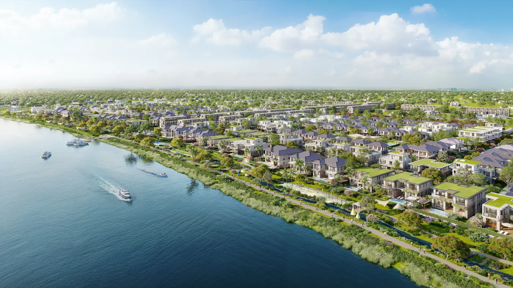
| Tên sản phẩm | The Aqua – compound biệt lập thuộc phân khu Aquaria |
|---|---|
| Khu đô thị | Waterpoint 355 ha |
| Chủ đầu tư | Nam Long Group hợp tác Nishi-Nippon Railroad (Nhật Bản) |
| Vị trí | Mặt tiền ĐT.830, xã Bến Lức, tỉnh Tây Ninh (trước 1/7/2025 thuộc huyện Bến Lức, tỉnh Long An) |
| Loại hình | Biệt thự trong compound biệt lập, cổng và tiện ích riêng |
| Dòng sản phẩm | Harborfront, Riverfront, Canal và Garden Grand Villa |
| Kiến trúc | Nhật đương đại · thiết kế công trình TWOG, ARDOR |
| Cảnh quan & hạ tầng | Lascal · Royal HaskoningDHV, Aurecon |
Nguồn: trang The Aqua và khu đô thị trên waterpoint.com.vn của chủ đầu tư.
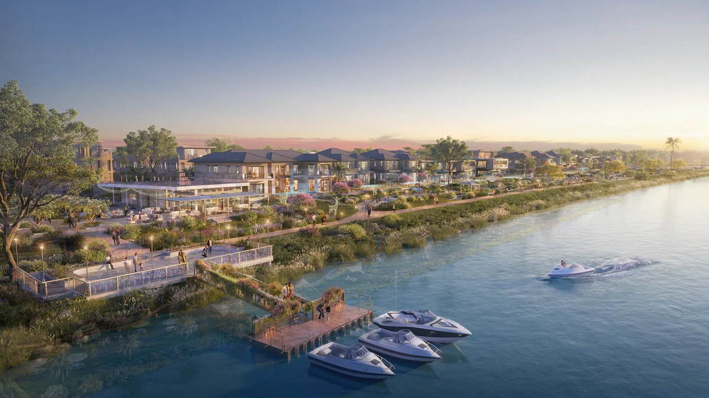
Vị trí Bên Vịnh Cảng nước ngọt 8,6 ha
Được ôm ấp bởi thiên nhiên khoáng đạt và “phong thuỷ thịnh vượng” hiếm có khi trải dài bên Vịnh Cảng nước ngọt 8,6ha và Công viên ven sông 3,5ha, các compound biệt lập The Aqua mở ra không gian sống như nghỉ dưỡng. Mỗi ngày đều là kỳ nghỉ đầy hạnh phúc bất tận dành riêng cho Gia đình Thượng lưu trong khu đô thị tích hợp hàng đầu phía Tây TP.HCM.
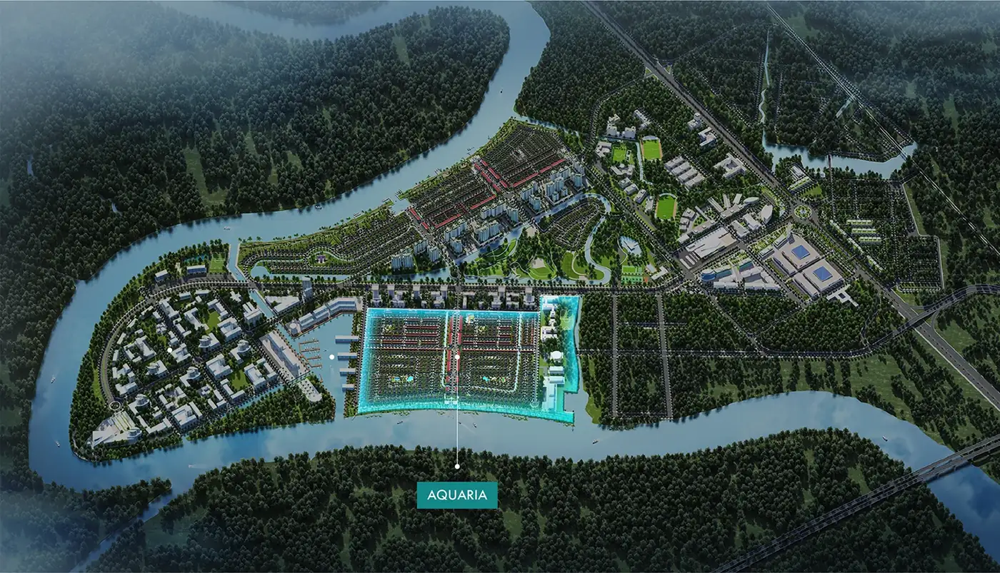
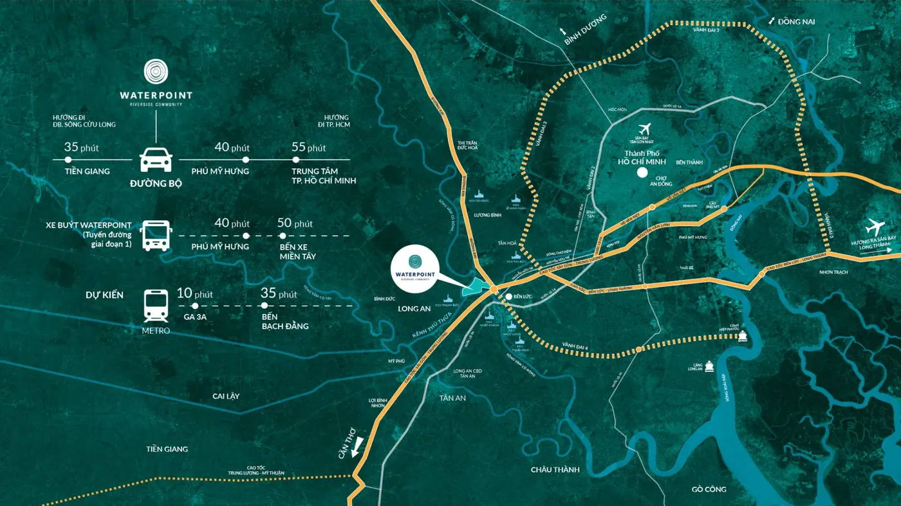
Kết nối đường bộ
Mặt tiền ĐT.830, tiếp cận cao tốc TP.HCM – Trung Lương và Quốc lộ 1, hai trục chính nối TP.HCM với miền Tây.
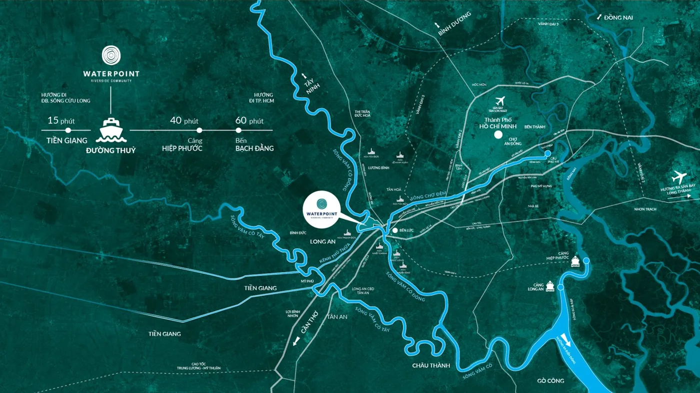
Kết nối đường thủy
Waterpoint nằm ở khu vực ngã ba sông Vàm Cỏ Đông, phần mặt nước được đưa vào quy hoạch cảnh quan của khu đô thị.
Thời gian di chuyển theo tài liệu của chủ đầu tư, mang tính tham khảo và phụ thuộc điều kiện giao thông thực tế. Tuyến metro đang ở dạng dự kiến.
Tiện ích nội khu
Mỗi ngày đều là kỳ nghỉ, ngay trong compound biệt lập
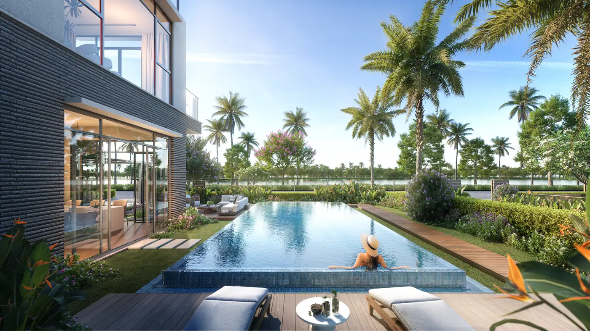
Phối cảnh minh hoạ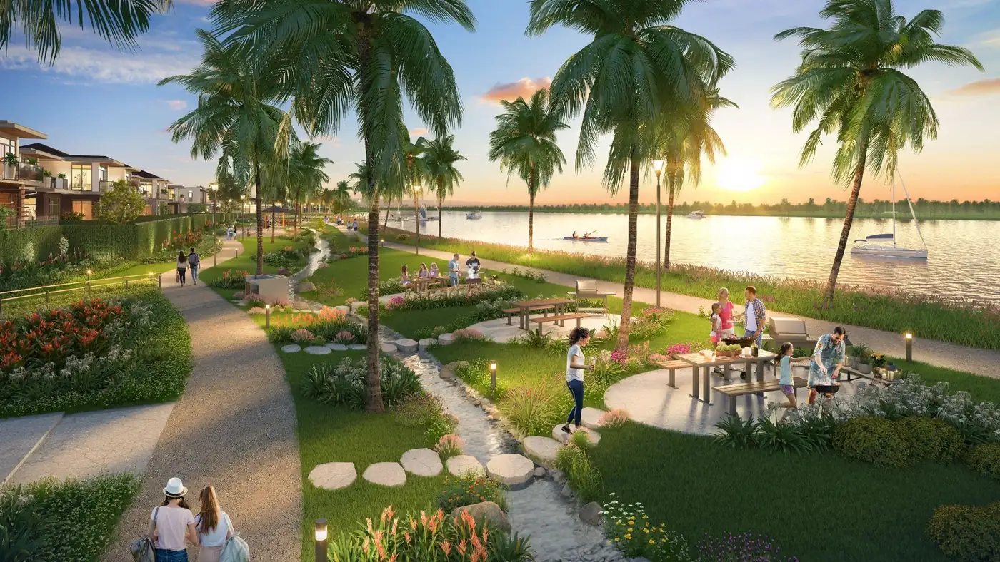
Phối cảnh minh hoạ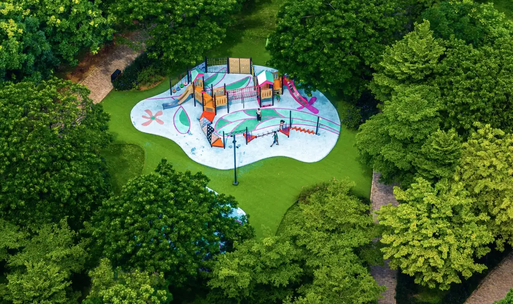
Ảnh thực tế Waterpoint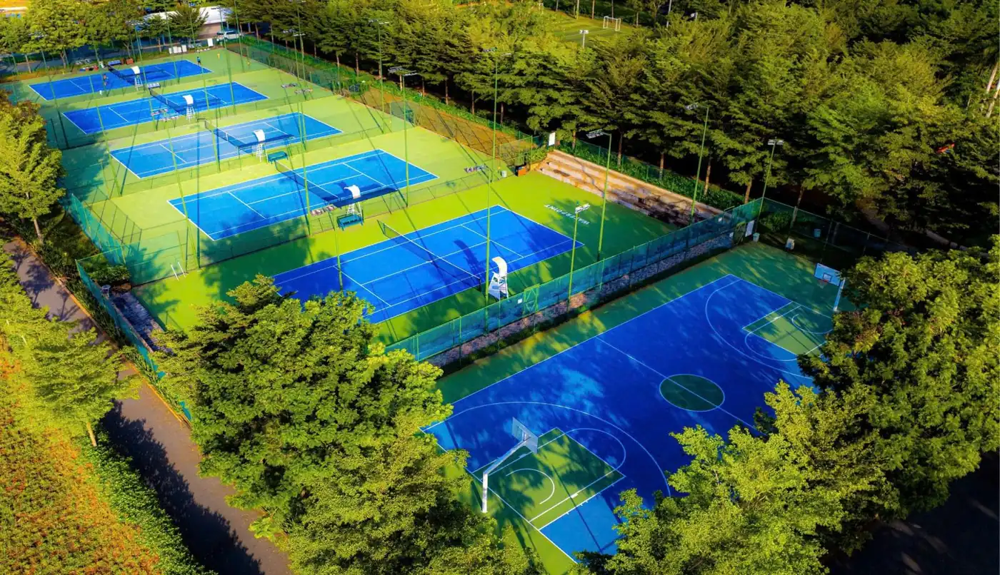
Ảnh thực tế Waterpoint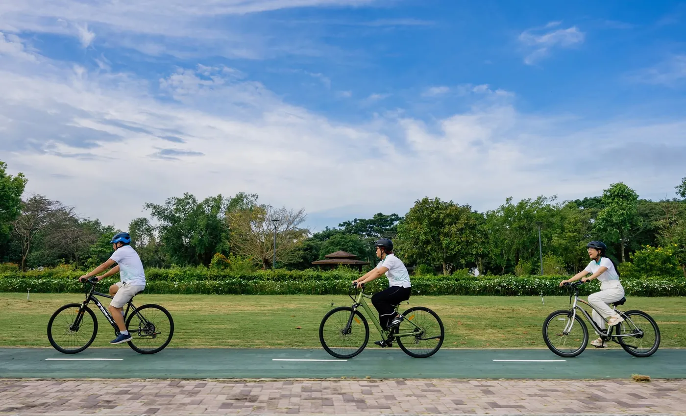
Ảnh thực tế WaterpointTiện ích nội khu The Aqua
- Hồ bơi người lớn, trẻ em
- Clubhouse
- Khu thể thao ngoài trời
- Cafe ngoài trời
- Khu vui chơi trẻ em
- Đường dạo bộ
- Sân thể thao đa năng
Theo sơ đồ tiện ích chủ đầu tư
- Vườn Nhật
- Chòi nghỉ sân vườn kiểu Nhật
- Khu vực BBQ
- Sân tập yoga
- Nhà hàng, cafe bên sông
- Bến thuyền
Ảnh thực tế chụp tại các tiện ích đang vận hành trong khu đô thị Waterpoint; phối cảnh mang tính chất minh hoạ.
Tiện ích ngoại khu
Dùng chung hệ tiện ích của khu đô thị Waterpoint 355 ha
Cư dân The Aqua dùng chung tiện ích của khu đô thị Waterpoint: công viên bờ sông, công viên bờ kênh, trường mầm non nội khu, Trường quốc tế song ngữ EMASI Plus cùng clubhouse và bến thuyền ven sông.
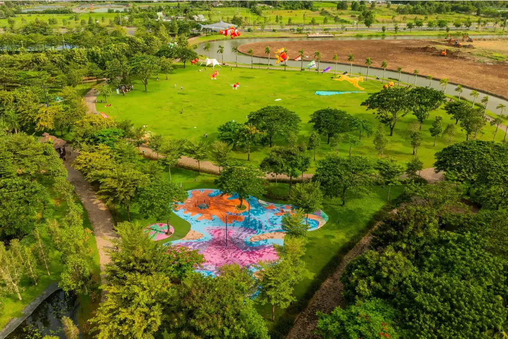
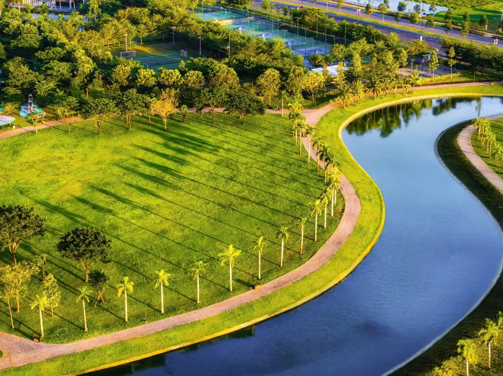
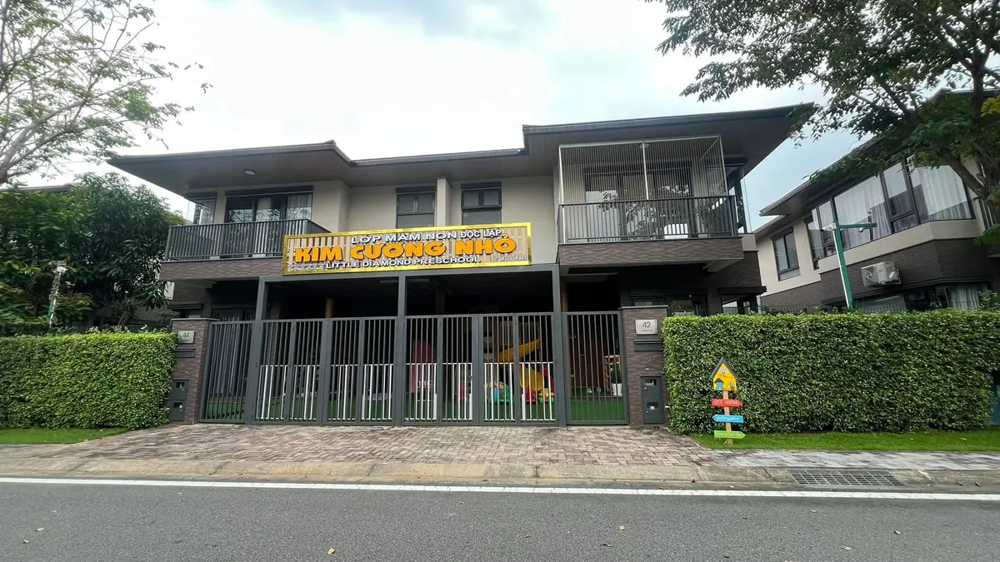
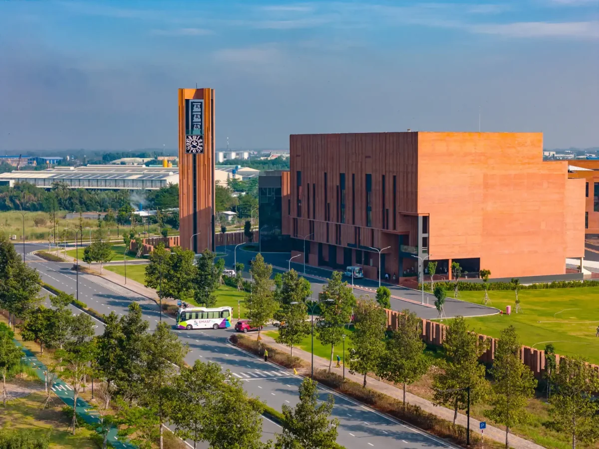
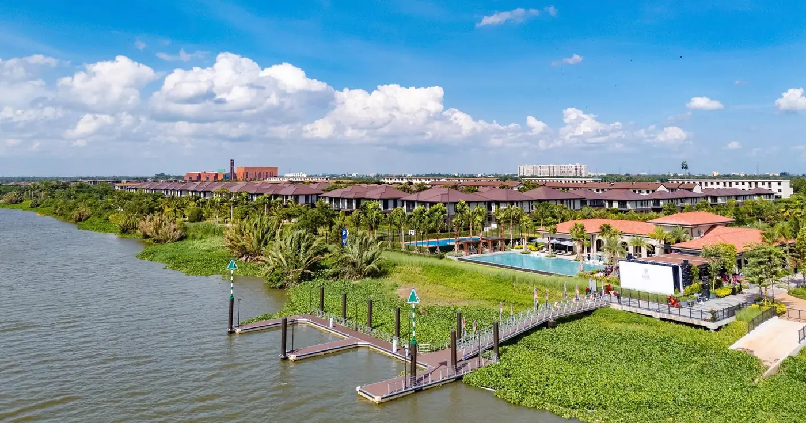
Mặt bằng tổng thể
Mặt bằng The Aqua chia sản phẩm theo vị thế: Riverfront Grand Villa hướng sông Vàm Cỏ Đông, Harborfront Grand Villa hướng Vịnh Cảng, Canal Villa và Canal Grand Villa ven kênh đào, Garden Villa và Garden Grand Villa hướng vườn nội khu.
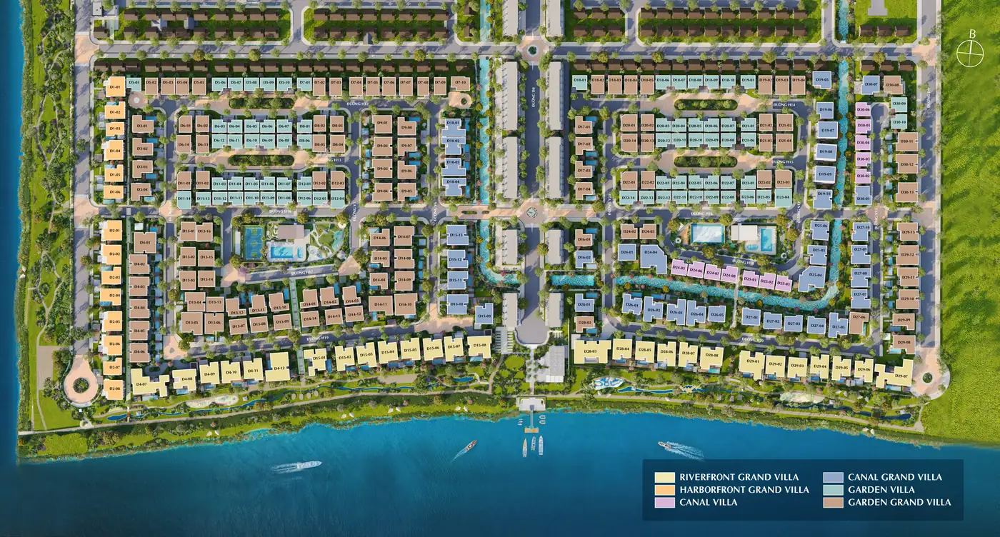
Các sản phẩm nhà mẫu
Đa dạng mẫu thiết kế thể hiện chất riêng của Gia Chủ
The Aqua có bốn dòng Grand Villa theo vị thế. Mẫu tiêu biểu: Harborfront VC3.1 (đất ~20 x 30 m, sàn ~568 m²), Riverfront VC1.1 (đất ~20 x 30 m, sàn ~427 m²), Canal VC1.2 (đất ~20 x 30 m, sàn ~425 m²) và Garden VB1.1 (đất ~15 x 20 m, sàn ~299 m²).
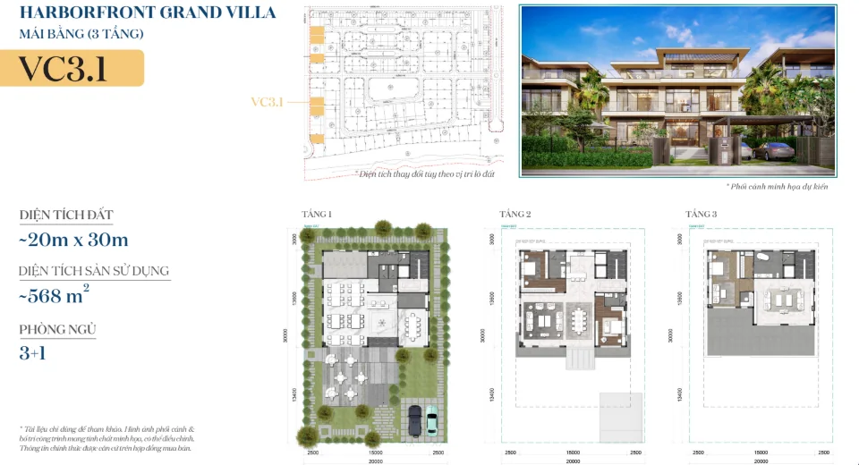
Phối cảnh, vị trí lô và mặt bằng từng tầng · bấm để phóng to
Harborfront Grand Villa
Vị trí độc tôn bên Vịnh Cảng nước ngọt 8,6 ha.
- Diện tích đất
- ~20 x 30 m
- Diện tích sàn sử dụng
- ~568 m²
- Phòng ngủ
- 3+1
- WC
- 5
Mẫu tiêu biểu; diện tích thay đổi tuỳ vị trí lô đất. Thông tin chính thức căn cứ theo hợp đồng mua bán.
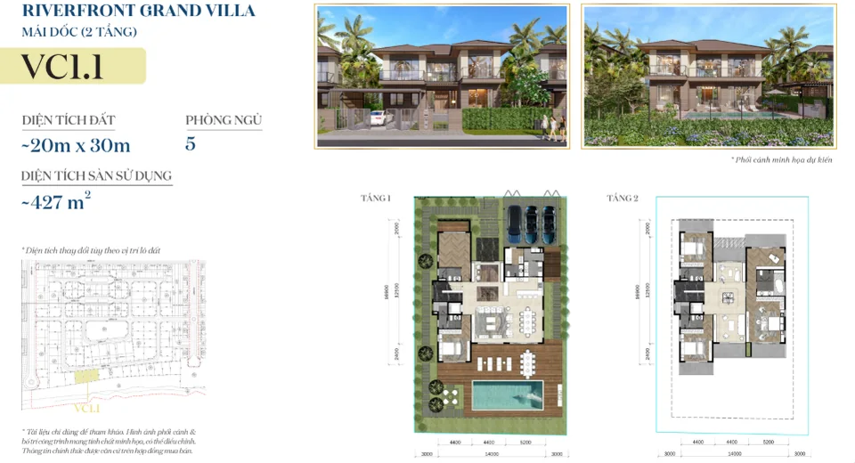
Phối cảnh, vị trí lô và mặt bằng từng tầng · bấm để phóng to
Riverfront Grand Villa
Tầm nhìn sông Vàm Cỏ Đông và dải công viên ven sông.
- Diện tích đất
- ~20 x 30 m
- Diện tích sàn sử dụng
- ~427 m²
- Phòng ngủ
- 5
- WC
- 6
Mẫu tiêu biểu; diện tích thay đổi tuỳ vị trí lô đất. Thông tin chính thức căn cứ theo hợp đồng mua bán.
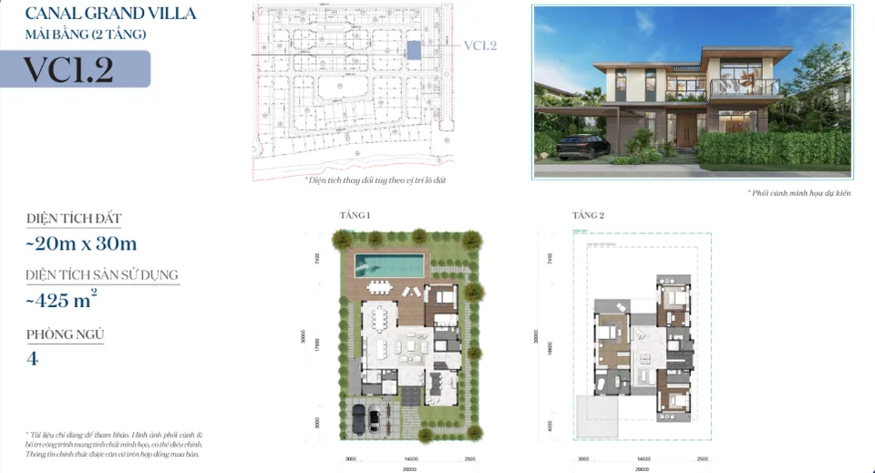
Phối cảnh, vị trí lô và mặt bằng từng tầng · bấm để phóng to
Canal Grand Villa
Bên dòng kênh đào cảnh quan len lỏi quanh khu phố biệt lập.
- Diện tích đất
- ~20 x 30 m
- Diện tích sàn sử dụng
- ~425 m²
- Phòng ngủ
- 4
- WC
- 5
Mẫu tiêu biểu; diện tích thay đổi tuỳ vị trí lô đất. Thông tin chính thức căn cứ theo hợp đồng mua bán.
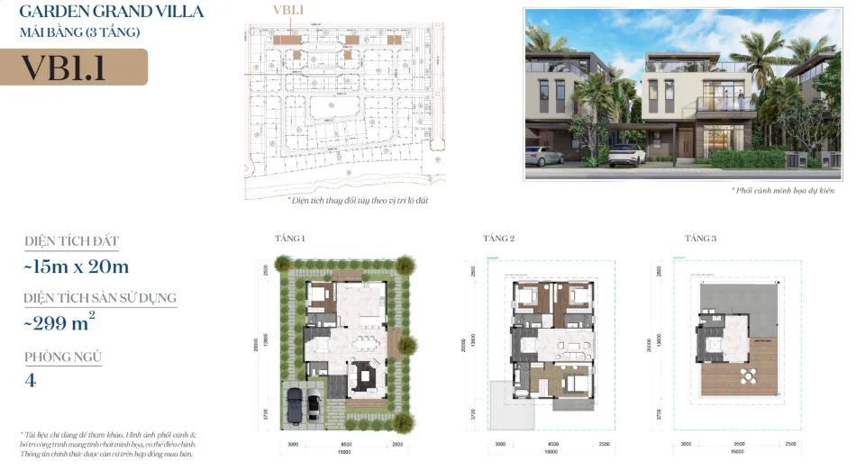
Phối cảnh, vị trí lô và mặt bằng từng tầng · bấm để phóng to
Garden Grand Villa
Mặt vườn nội khu, sắc xanh tràn vào từng không gian sống.
- Diện tích đất
- ~15 x 20 m
- Diện tích sàn sử dụng
- ~299 m²
- Phòng ngủ
- 4
- WC
- 4
Mẫu tiêu biểu; diện tích thay đổi tuỳ vị trí lô đất. Thông tin chính thức căn cứ theo hợp đồng mua bán.
| Mẫu | Diện tích đất | Sàn sử dụng | Phòng ngủ | WC | Tầng · mái |
|---|---|---|---|---|---|
| Harborfront VC3.1 | ~20 x 30 m | ~568 m² | 3+1 | 5 | 3 tầng · mái bằng |
| Riverfront VC1.1 | ~20 x 30 m | ~427 m² | 5 | 6 | 2 tầng · mái dốc |
| Canal VC1.2 | ~20 x 30 m | ~425 m² | 4 | 5 | 2 tầng · mái bằng |
| Garden VB1.1 | ~15 x 20 m | ~299 m² | 4 | 4 | 3 tầng · mái bằng |
Chính sách bán hàng, ưu đãi và lịch thanh toán
Chính sách bán hàng, ưu đãi và lịch thanh toán The Aqua đang chờ chủ đầu tư công bố chính thức. Chuyên viên ERA sẽ cập nhật cho anh/chị ngay khi có thông báo, gồm ba nội dung bên cạnh.
- Bảng giá chính thứcTheo từng dòng Harborfront, Riverfront, Canal và Garden Grand Villa.
- Ưu đãi đợt hiện hànhChiết khấu, quà tặng theo thông báo của chủ đầu tư.
- Lịch thanh toán & hỗ trợ vayTiến độ thanh toán và ngân hàng liên kết.
Câu hỏi thường gặp về The Aqua
The Aqua nằm ở đâu?
The Aqua là compound biệt thự thuộc phân khu Aquaria trong khu đô thị Waterpoint, mặt tiền đường ĐT.830, xã Bến Lức, tỉnh Tây Ninh. Trước ngày 1/7/2025, khu vực này thuộc xã An Thạnh, huyện Bến Lức, tỉnh Long An. The Aqua trải dài bên Vịnh Cảng nước ngọt 8,6 ha và công viên ven sông 3,5 ha.
Chủ đầu tư The Aqua là ai?
The Aqua do Nam Long Group phát triển cùng đối tác Nhật Bản Nishi-Nippon Railroad. Thiết kế công trình do TWOG và ARDOR thực hiện, cảnh quan do Lascal, hạ tầng do Royal HaskoningDHV và Aurecon tư vấn.
The Aqua có những dòng sản phẩm nào?
The Aqua chia biệt thự theo vị thế: Harborfront Grand Villa hướng Vịnh Cảng, Riverfront Grand Villa hướng sông Vàm Cỏ Đông, Canal Grand Villa ven kênh đào và Garden Grand Villa hướng vườn nội khu; mặt bằng còn có Canal Villa và Garden Villa. Kiến trúc mang phong cách Nhật đương đại.
Các mẫu nhà The Aqua rộng bao nhiêu?
Mẫu Harborfront Grand Villa VC3.1 có đất khoảng 20 x 30 m, sàn khoảng 568 m², 3+1 phòng ngủ. Mẫu Riverfront Grand Villa VC1.1 có đất khoảng 20 x 30 m, sàn khoảng 427 m², 5 phòng ngủ. Mẫu Canal Grand Villa VC1.2 có đất khoảng 20 x 30 m, sàn khoảng 425 m², 4 phòng ngủ. Mẫu Garden Grand Villa VB1.1 có đất khoảng 15 x 20 m, sàn khoảng 299 m², 4 phòng ngủ.
Giá The Aqua bao nhiêu?
Chủ đầu tư chưa công bố bảng giá và chính sách bán hàng mới của The Aqua trên kênh chính thức. Giá từng căn phụ thuộc dòng sản phẩm, diện tích và vị trí lô; bảng giá chính thức theo thông báo của chủ đầu tư.
The Aqua có những tiện ích nội khu gì?
Tiện ích nội khu The Aqua gồm hồ bơi người lớn và trẻ em, clubhouse, khu thể thao ngoài trời, cafe ngoài trời, khu vui chơi trẻ em, đường dạo bộ và sân thể thao đa năng. Sơ đồ tiện ích của chủ đầu tư còn có vườn Nhật, chòi nghỉ sân vườn kiểu Nhật, khu BBQ, sân tập yoga, nhà hàng cafe bên sông và bến thuyền.
Từ The Aqua đi TP.HCM mất bao lâu?
Theo tài liệu của chủ đầu tư, từ Waterpoint đi đường bộ khoảng 40 phút đến Phú Mỹ Hưng, khoảng 55 phút đến trung tâm TP.HCM và khoảng 35 phút đến Tiền Giang, qua cao tốc TP.HCM – Trung Lương và Quốc lộ 1. Đường thuỷ khoảng 60 phút đến Bến Bạch Đằng.
Quanh The Aqua có tiện ích ngoại khu nào?
Cư dân The Aqua dùng chung tiện ích của khu đô thị Waterpoint 355 ha, gồm công viên bờ sông, công viên bờ kênh, trường mầm non nội khu, Trường quốc tế song ngữ EMASI Plus cùng clubhouse và bến thuyền ven sông Vàm Cỏ Đông.
Đăng ký tham quan The Aqua
Trực tiếp trải nghiệm Chất riêng bên Vịnh Cảng tại The Aqua – Waterpoint.
- Xem các dòng Harborfront, Riverfront, Canal và Garden Grand Villa
- Đi một vòng Waterpoint: Vịnh Cảng, công viên ven sông, EMASI Plus
- Hẹn lịch tham quan cùng chuyên viên ERA đã gửi bạn trang này